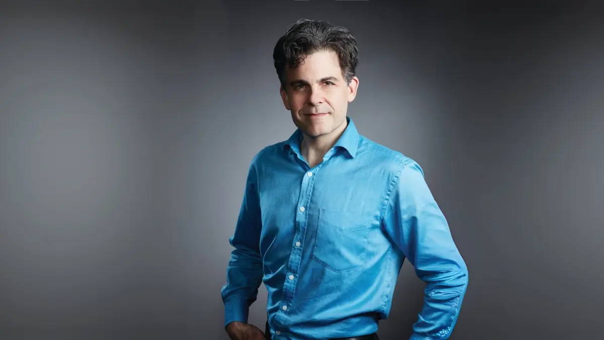
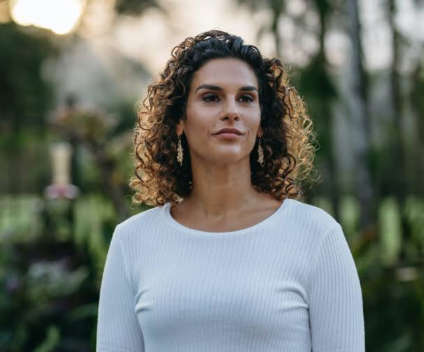

Trang chủ


KHI TRÍ TUỆ NHÂN TẠO GẶP GỠ KỲ QUAN ĐẠI DƯƠNG Sự kiện năm nay tự hào mang đến một không gian đối thoại mang tầm vóc toàn cầu, nơi quy tụ hai tên tuổi kiệt xuất – những nhà tiên phong xuất sắc nhất thế giới trong việc định hình tương lai công nghệ và giải mã bí ẩn tự nhiên.Khán phòng sẽ được dẫn dắt bởi TS. David Hanson, nhà sáng lập Hanson Robotics và là "cha đẻ" của robot công dân Sophia lừng danh toàn cầu. Bằng tư duy thiên tài kết hợp giữa nghệ thuật và kỹ thuật robot, ông sẽ mở ra bức tranh sống động về tương lai cộng sinh giữa con người và trí tuệ nhân tạo.Sánh bước cùng dòng chảy công nghệ là cuộc hành trình lặn sâu vào lòng biển cả cùng TS. Diva Amon, nhà sinh vật học đại dương hàng đầu thế giới và là Nhà thám hiểm của National Geographic. Với nụ cười rạng rỡ, năng lượng tràn đầy cùng những thước phim thám hiểm sâu hàng dặm dưới đáy đại dương, cô sẽ truyền ngọn lửa đam mê về sứ mệnh bảo tồn hệ sinh thái biển trước những thách thức toàn cầu.Sự hội tụ của hai bộ óc tài sắc vẹn toàn, sở hữu sức ảnh hưởng sâu rộng trong giới khoa học và truyền thông quốc tế, hứa hẹn sẽ mang đến cho quý vị những góc nhìn đột phá, mãn nhãn và tràn đầy cảm hứng.